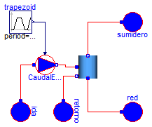
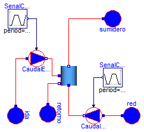

| Name | Description |
|---|---|
| Validacion_Carga_Acumulador_Orden | Modelo que muestra el comportamiento basico del acumulador cuando se carga de energía |
| Validacion_CargaDescarga_Acumulador_Orden | Modelo que muestra el comportamiento del acumulador cuando se carga y descarga de energia |

model Validacion_Carga_Acumulador_Orden
"Modelo que muestra el comportamiento basico del acumulador cuando se carga de energía"
Modelica.Thermal.FluidHeatFlow.Sources.PrescribedVolumeFlow CaudalEntrada(
medium=Modelica.Thermal.FluidHeatFlow.Media.Water(), m=0.1);
Modelica.Thermal.FluidHeatFlow.Sources.Ambient ida(
medium=Modelica.Thermal.FluidHeatFlow.Media.Water(),
p_Ambient=101300,
T_Ambient=Modelica.SIunits.Conversions.from_degC(70));
Modelica.Thermal.FluidHeatFlow.Sources.Ambient retorno(medium=
Modelica.Thermal.FluidHeatFlow.Media.Water(), p_Ambient=101300);
Modelica.Thermal.FluidHeatFlow.Sources.Ambient red(medium=
Modelica.Thermal.FluidHeatFlow.Media.Water(), p_Ambient=101300);
Modelica.Blocks.Sources.Trapezoid trapezoid(
amplitude=0.0002,
rising=10,
falling=10,
startTime=10,
period=86400,
width=1000,
offset=0);
Modelica.Thermal.FluidHeatFlow.Sources.Ambient sumidero(medium=
Modelica.Thermal.FluidHeatFlow.Media.Water(), p_Ambient=101300);
Acumulador_Orden acumulador_Orden(
n=4,
medium=Modelica.Thermal.FluidHeatFlow.Media.Water(),
espec=Soltermica.Acumuladores.CatalogoEquipos.IDROGAS_CV200SR(),
T_ini=293.15);
equation
connect(ida.flowPort, CaudalEntrada.flowPort_a);
connect(trapezoid.y, CaudalEntrada.VolumeFlow);
connect(CaudalEntrada.flowPort_b, acumulador_Orden.flowPort_a1);
connect(retorno.flowPort, acumulador_Orden.flowPort_b1);
connect(red.flowPort, acumulador_Orden.flowPort_a);
connect(acumulador_Orden.flowPort_b, sumidero.flowPort);
end Validacion_Carga_Acumulador_Orden;

model Validacion_CargaDescarga_Acumulador_Orden
"Modelo que muestra el comportamiento del acumulador cuando se carga y descarga de energia"
Modelica.Thermal.FluidHeatFlow.Sources.PrescribedVolumeFlow CaudalEntrada(
medium=Modelica.Thermal.FluidHeatFlow.Media.Water(), m=0.1);
Modelica.Thermal.FluidHeatFlow.Sources.Ambient ida(
medium=Modelica.Thermal.FluidHeatFlow.Media.Water(),
p_Ambient=101300,
T_Ambient=Modelica.SIunits.Conversions.from_degC(70));
Modelica.Thermal.FluidHeatFlow.Sources.Ambient retorno(medium=
Modelica.Thermal.FluidHeatFlow.Media.Water(), p_Ambient=101300);
Modelica.Thermal.FluidHeatFlow.Sources.Ambient red(medium=
Modelica.Thermal.FluidHeatFlow.Media.Water(), p_Ambient=101300);
Modelica.Blocks.Sources.Trapezoid SenalCarga(
amplitude=0.0002,
rising=10,
falling=10,
startTime=10,
period=86400,
width=1000,
offset=0);
Modelica.Thermal.FluidHeatFlow.Sources.Ambient sumidero(medium=
Modelica.Thermal.FluidHeatFlow.Media.Water(), p_Ambient=101300);
Modelica.Thermal.FluidHeatFlow.Sources.PrescribedVolumeFlow CaudalConsumo(
medium=Modelica.Thermal.FluidHeatFlow.Media.Water(), m=0.1);
Modelica.Blocks.Sources.Trapezoid SenalConsumo(
amplitude=0.0002,
rising=10,
falling=10,
offset=0.0000001,
period=86400,
width=600,
startTime=1000);
Acumulador_Orden acumulador_Orden(
n=4,
medium=Modelica.Thermal.FluidHeatFlow.Media.Water(),
espec=Soltermica.Acumuladores.CatalogoEquipos.IDROGAS_CV200SR(),
T_ini=293.15);
equation
connect(ida.flowPort, CaudalEntrada.flowPort_a);
connect(SenalCarga.y, CaudalEntrada.VolumeFlow);
connect(SenalConsumo.y, CaudalConsumo.VolumeFlow);
connect(CaudalConsumo.flowPort_a, red.flowPort);
connect(CaudalEntrada.flowPort_b, acumulador_Orden.flowPort_a1);
connect(acumulador_Orden.flowPort_b1, retorno.flowPort);
connect(acumulador_Orden.flowPort_a, CaudalConsumo.flowPort_b);
connect(acumulador_Orden.flowPort_b, sumidero.flowPort);
end Validacion_CargaDescarga_Acumulador_Orden;